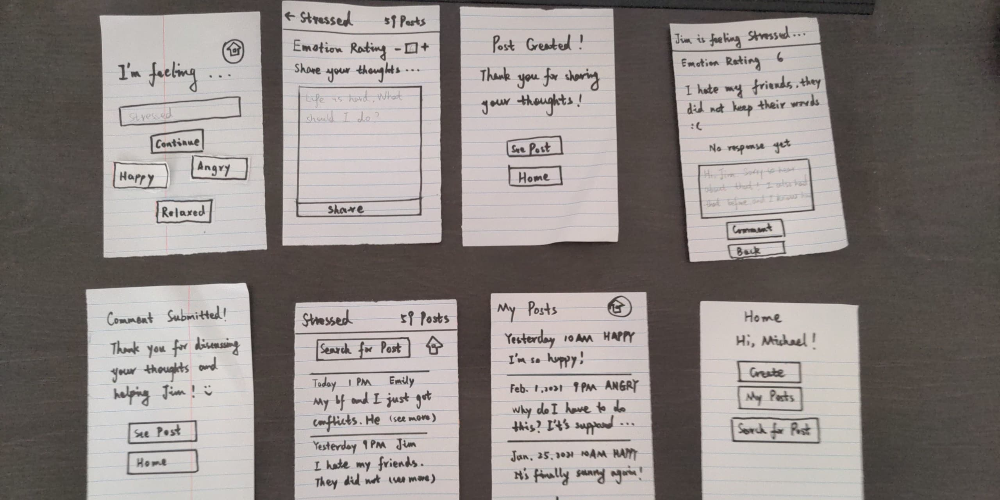
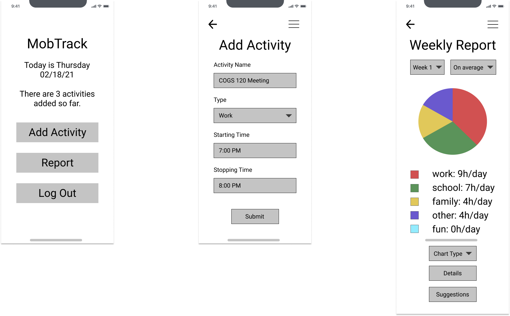
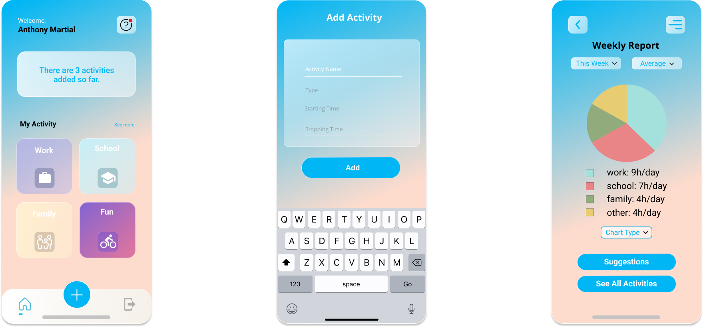
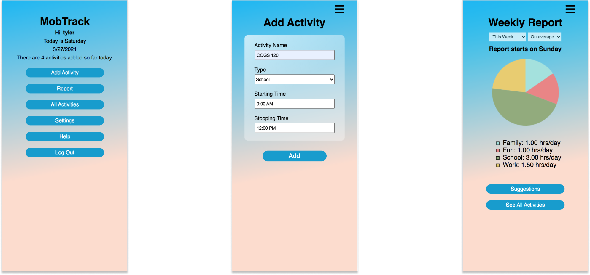
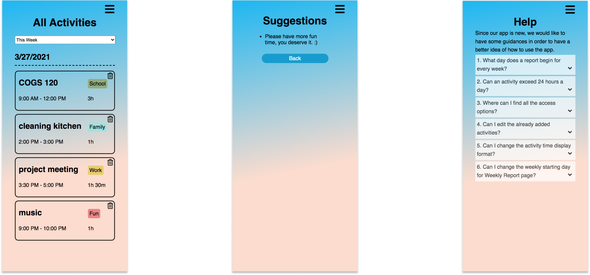

Team: An Huynh (me); Tam Tran; Jiachen Niu
My role: UX Designer, Front-End Developer
Tools: Figma, HTML/CSS/JavaScript, jQuery, JSON, AJAX, GitHub, and Heroku
• In our Interaction Design class, we focused on the challenge of "The Quantified Self," specifically addressing the difficulty many people face in reflecting on their daily patterns. In the midst of a busy life, where responsibilities like family, school, and work often feel overwhelming, it’s easy to lose track and feel uncertain about what steps to take next. Our goal was to create a solution that helps people better understand and manage their daily routines, giving them clarity and direction in their hectic lives. • Inspired by this challenge, we developed MobTrack, a mobile app designed to help users track their daily activities. The app allows users to log their routines and then provides insightful activity reports and personalized suggestions based on the data collected. With MobTrack, users can easily monitor their patterns over time, enabling them to reflect on their behaviors and uncover the deeper meaning behind their daily actions. This helps them stay connected to what truly drives them, even amidst life's chaos.
We chose interviews as our primary research method because we wanted to engage in deep, meaningful conversations with users. By asking open-ended questions, we aimed to gather rich qualitative data that would provide us with a more nuanced understanding of their needs and experiences. Additionally, many participants expressed a preference for Zoom interviews, which made the process more convenient and accessible. Our plan was to interview 5 to 7 participants, all of whom were relevant to the project, as they either currently seek ways to reflect on their lives or are interested in finding more effective methods for self-reflection. This alignment made their insights especially valuable to our work.
• Many participants expressed feeling lost and unsure about what to do with their lives.
• Most participants wanted to find a way to reflect on their lives but struggled to do
so effectively.
• A common theme was that being overwhelmed with responsibilities often prevented them
from taking the time to reflect.
• Additionally, several participants mentioned that a lack of motivation, especially
after facing challenges, was a key barrier to self-reflection.
• A few participants did attempt to reflect by taking notes, either in a physical
notebook or on their phones, but found this method ineffective due to difficulty
organizing or filtering their thoughts.
According to our research, we got our Point of View for this aspect which is:
“When life becomes busy, it’s easy to lose sight of
what truly makes life meaningful. By prompting people to reflect on their daily
patterns, we can help them reconnect with the deeper purpose that drives them,
offering a reminder of what truly matters amidst the hustle and bustle.”
After sketching out the stories, we made two paper protoAfter sketching out the user stories, we created two paper prototypes to visualize the key components of our mobile app. To identify areas for improvement before advancing to a high-fidelity design, we conducted three rounds of user testing on the paper prototypes. This allowed us to gather valuable feedback and refine our design based on real user input.types to visualize the main components of our mobile app. In order to find where we would be able to improve before moving on to designing a high fidelity prototype, we conducted three user testing on the paper prototypes.
The primary focus of Prototype 1 was on adding activities to the app, with essential details such as Activity Name, Type, Start Time, and End Time. Based on the recorded activities, users would be able to view a weekly report that includes personalized suggestions from the app, helping them reflect on their routines and make informed adjustments.


The second prototype explored a different approach by facilitating advice-sharing within a community. Users could seek guidance from others, as well as offer their own advice in return. This feature aimed to create a supportive, collaborative space where individuals could share experiences and insights, helping each other navigate their challenges.
We conducted user testing via Zoom and received valuable feedback from our evaluators. Based on their input, we identified four major issues with our paper prototypes:
• Lack of Help and Documentation:
Two users criticized that some sections of both prototypes were confusing, and having the “Help” section would help improve the “Help and Documentation” aspect. Two users found certain sections of both prototypes confusing. They suggested that adding a "Help" section would greatly improve usability by providing guidance and clarifying features.
• Lack of Aesthetic and Minimalist Design:
One user told us that both prototypes were really text heavy. Thus, adding more visuals would improve this aspect for the next steps.One user pointed out that both prototypes were overly text-heavy. They recommended incorporating more visuals and simplifying the design to make the interface more engaging and user-friendly.
• Lack of Error Prevention:
There were not enough pages or pop-ups for confirmation to make sure that users did not take action accidentally.Users noted the absence of confirmation pop-ups or error-prevention mechanisms, which could help prevent accidental actions and improve user confidence.
• Issues with User Control and Freedom:
In Prototype 1, one user mentioned that there was no option to edit an activity once it was added by mistake. They suggested adding a way to modify or delete activities, giving users greater control over their input.
After receiving the feedback from users, we created low fAfter receiving feedback from users, we created a low-fidelity prototype in Figma. This prototype included three main screens: the homepage, the activity input screen, and the weekly report screen. In response to user feedback, we also added more visuals to enhance the design, making it both more aesthetic and minimalist. These changes aimed to improve usability and appeal, while maintaining clarity and simplicity.
Once we had a clear understanding of the structure of the digital screens, we moved on to creating a high-fidelity prototype. This involved adding colors, refining the visual elements, and incorporating a few additional details to enhance the overall design. The goal was to finalize the look and feel before proceeding to the development phase, where we would implement the application using HTML, CSS, and JavaScript.
Using the digital prototypes as a guide, we proceeded to develop our product with HTML, CSS, and JavaScript. Our initial goal was to ensure that the application closely matched the Figma prototypes in both design and functionality. However, due to time and development constraints, a few features had to be left out. For example, we were unable to implement the option to choose chart types or display activities directly on the homepage. Additionally, the suggestion feature was not fully completed, as we didn’t have enough time to develop the complex logic required for it. Despite these limitations, we were able to deliver a functional version of the app, with plans to enhance it in future iterations.
We also made several improvements based on the feedback from user testing. These included adding a "Help" section to assist users with navigation, implementing confirmation pop-ups for error prevention, and creating an option to edit or delete specific activities in case of mistakes. These updates helped enhance usability and address some of the key concerns raised by users during testing.
If you would like to explore our application, you can try it HERE
 If we were to continue the project, our focus would be on implementing the features that were not yet developed and enhancing the underlying logic to provide more accurate and relevant user suggestions. We would also prioritize refining the visual design to more closely align the application with the Figma prototypes. Furthermore, we intend to conduct additional user testing to gather actionable feedback, allowing us to make data-driven improvements and iterate on the application effectively.
Working remotely with my team taught me valuable lessons, especially during the pandemic. If given the chance to do it again, we would dedicate more time to thoroughly planning tasks, setting clear expectations, and developing contingency plans in case things didn’t go as anticipated. One of our key successes was prioritizing the application’s functionality and carefully reviewing it for heuristic errors, which helped ensure a more robust final product.
Thanks for reading!